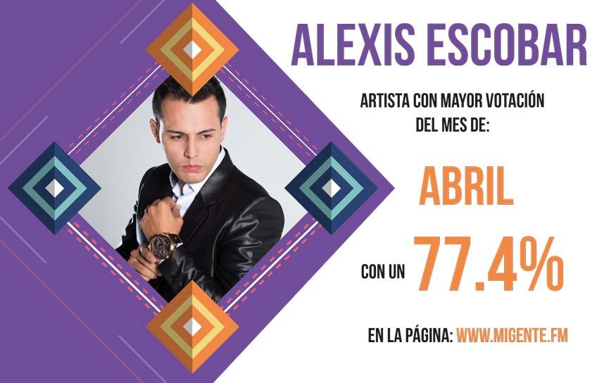

Directorio de Artistas

Yiyo Bohórquez
{kind=link}
Taxi Orquesta
{kind=link}
Stokoff
 |
Después de lograr los primeros lugares en los listados radiales en Colombia y la Costa Este de los Estados Unidos, con su sencillo “Seguiré adelante”, el artista regresa para promocionar su más reciente sencillo y video musical titulado “Pensando en ti”, tema de su completa autoría, en donde habla de una historia de amor que se termina y uno de los protagonistas no logra olvidar a la otra persona por más que lo intenta. Contacto: |
Sebastián “El coyote”
{kind=link}
Sebastián Campos
{kind=link}
Roy Prada
{kind=link}
PYEM
 |
Pyem, se encuentra promocionando su más reciente sencillo “Sinónimo de maldad” junto con Dani y Magneto, canción que está ocupando los primeros lugares en las principales estaciones radiales del país. |
Peña Suazo
{kind=link}
Orlando López
{kind=link}
Olider Montana
 |
“Sin fortuna”, es el más reciente trabajo discográfico de Olider Montana. El video que fue grabado en San Luís, Tolima, y ya tiene más de 12 mil visualizaciones en el canal de YouTube. |
Milton César
{kind=link}
Mauricio Ceballos
 |
Conocido como “La voz del sentimiento popular”, llega con su reciente trabajo discográfico “Me pego mis tragos”, un sencillo que ya llega a los 200 mil views. Mauricio Ceballos, quien se perfila como uno de los más importantes cantantes de este género, contó con más de 100 mil visualizaciones del video “Los dos la quisimos”. |
Marco López
 |
Marco López, presenta su más reciente trabajo discográfico en el que se encuentran temas como “Brindemos por la que se fue” y “Alegre y mujeriego”, sencillos que están basados en experiencias reales, con las que los seguidores de la música popular se sentirán identificados. |
Luisito Muñoz
 |
El reconocido cantante de música popular, Luisito Muñoz, se encuentra promocionando su más reciente sencillo “Ángel o demonio” un trabajo que realizó al lado de Fredy Montoya, luego de su éxito “Amor ilegal”. |
Luis Miguel Fuentes
 |
Con una trayectoria musical de más de 20 años, Luis Miguel Fuentes, presenta su más reciente sencillo “Te voy a olvidar”, un trabajo discográfico que se destaca por su romanticismo vallenato. Este artista tiene una excelente acogida por el público por su estilo romántico y parrandero. |
Los Hermanos Medina
 |
Desde Popayán – Cauca, llega la agrupación tropical número 1 de la región pacífica, Los Hermanos Medina, que está conformada por el padre y sus hijos, y presentan su más reciente éxito “Estado civil: Amantes”, después de sus éxitos “Somos prohibidos” y “Quédate con él”, que superó los 6 millones de views en YouTube. |
Los Caballeros de la Cantina
{kind=link}
Los Bacanes del Sur
 |
Los Bacanes del Sur, siguen cosechando triunfos y ahora con el lanzamiento de su nuevo sencillo titulado –Se terminó-, de la autoría de Israel Dasis, es una canción popular romántica al estilo de “Los Bacanes del Sur”. La canción “Se terminó” provocará sentimientos encontrados en quienes la escuchen. |
Las Ingratas
{kind=link}
Karval
 |
Karval nos pone a bailar con “Si tú me Quieres”, tema que cuenta la historia de esa persona que llega a tu vida en el momento más necesitado pero menos esperado, y que demostrando también ese amor mutuo forman una vida juntos; así igual está plasmado en su video, donde el mismo Karval aparte de interpretarlo actúa junto a su esposa. |
Karina Shalá
{kind=link}
Karina Castillo
{kind=link}
Juan Palau
 |
Después del gran debut como solista de Juan Palau en las Emisoras juveniles de Colombia con “Pa’ la playa”, canción que se convirtió en el himno de las vacaciones durante el 2015 y -Muévete- que se posicionó entre los jóvenes a nivel nacional en el 2016, Juan Palau presenta en el 2017 su nuevo sencillo “Dale prepárate”. |
Juan Manuel Nazmín
{kind=link}
Joaquín Guiller
{kind=link}
Jhon Sebastián
{kind=link}
Jhon Castillo
{kind=link}
Jaycob Duque
{kind=link}
Guían
{kind=link}
Grupo Tornado
{kind=link}
Fernando Gil
 |
El colombiano Fernando Gil está de lanzamiento con su más reciente sencillo “Perdí” que contó con la participación del cantante mexicano Roberto Junior. Sin duda el nuevo éxito de ambos artistas “Perdí” dará mucho de qué hablar y sentir en los corazones de América Latina. |
Fanny Ospina
 |
Esta nueva artista en el género popular entró al mercado nacional con su tema promocional “Amores que duelen”, tema que se posicionó en el 2016, lo que la impulso a iniciar este 2017 con más fuerza que nunca y presenta “Tentación divina”, un nuevo éxito escrito con el alma que sin duda alguna será del agrado de todos los seguidores de la música popular. |
Fabio Gómez
 |
Fabio Gómez continúa presentando su más reciente sencillo “Dame un beso”, canción que contó con la participación de Dragón Rojo. |
Lalo Bravo
 |
Lalo Bravo “el príncipe de la cantina“, es cantante y compositor musical con más de 600 letras escritas. Luego de su éxito musical “Digan lo que digan”, Lalo, llega con su más reciente sencillo “Beber y beber”, para esas personas que sufren por una traición. |
El Rey Lancheros
{kind=link}
El Joey
{kind=link}
El Cóndor del Oriente
 |
“Con Dios y el pueblo”. Robinson Ospina, “El cóndor del oriente”, inicia el 2017 con el lanzamiento de “Se tragó de mi”, un sencillo que conquistará a todos los seguidores de la música popular. “El cóndor del oriente”, tuvo gran acogida con el público colombiano con sus éxitos “Tan llena de nada” y “El whatsapp”. |
El Charrito Negro
 |
Después de canciones como “Cuestión olvidada”, “Quererte fue un error”, “A usted señora”, “Pero te vas arrepentir” y “Cuéntale a ese”, que lo han llevado a recorrer el mundo en más de 30 giras, llega hoy con su nuevo trabajo musical “Si no es contigo” un tema que expresa el verdadero amor que sientes por una persona. |
Edilson González
{kind=link}
Dr. Velásquez
 |
El cantautor Colombiano Dr Velásquez mejor conocido como #ElManDeGorraQueCantaPop sacó al mercado su último sencillo titulado “Será mía”. |
{kind=link}
{kind=link}